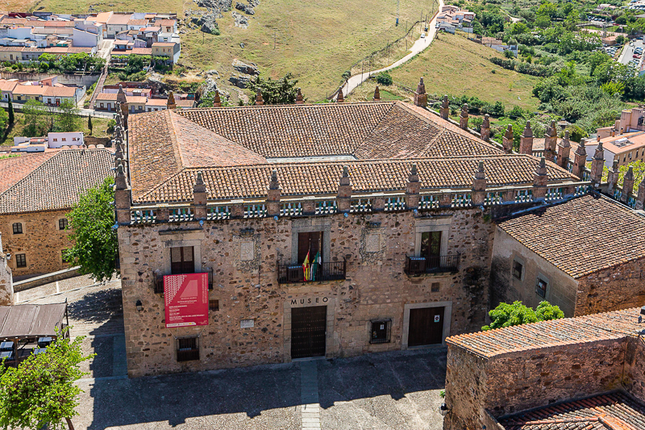
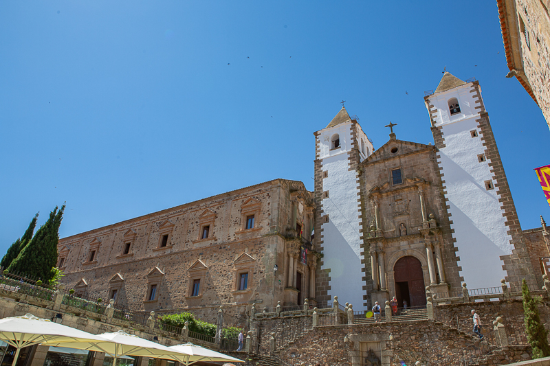

Historia de Cáceres
Una ciudad con siglos de historia
Cáceres, declarada Patrimonio de la Humanidad por la UNESCO, es una joya medieval que combina influencias romanas, musulmanas, judías y cristianas. Su casco histórico es uno de los más completos y mejor conservados de Europa, con callejuelas empedradas, palacios renacentistas y torres defensivas que narran siglos de historia.
La ciudad ha sido habitada desde tiempos prehistóricos, con restos del Paleolítico, y tuvo un gran auge durante la dominación romana y musulmana. Hoy, Cáceres es un símbolo de la convivencia de culturas y un destino imprescindible para los amantes de la historia.
Leer historia completa

